기묘한
기묘한
소개
디자인
서비스
팀
메인페이지 영역
기묘한
그림으로 추억을 간직하세요
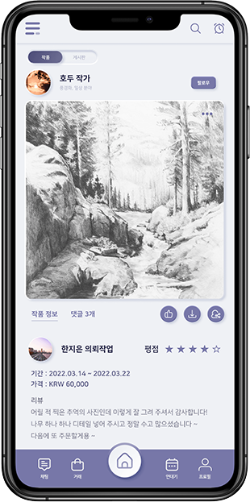
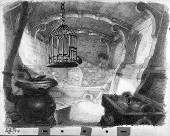
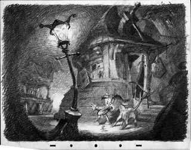
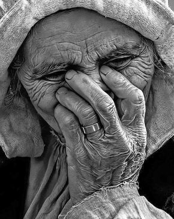
기묘한
記
기록할 기
描
그릴 묘
汗
땀 한
기묘한에서 당신의 소중한 사진을 그림으로 남기세요.
많은 아티스트들이 당신의 추억을 땀으로 그려주고 기억할 것입니다.
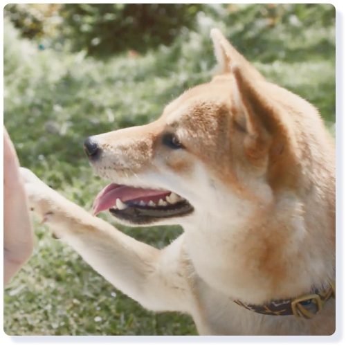 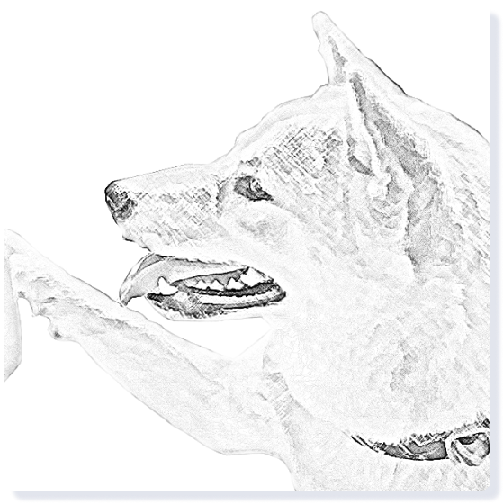 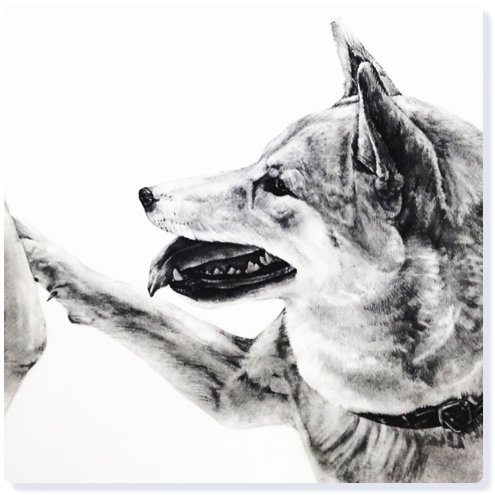
'기묘한'에는 당신의 추억을 그려줄 수많은 아티스트가 있습니다.
기묘한은 아티스트와 소통과 정확한 거래를 제공합니다.
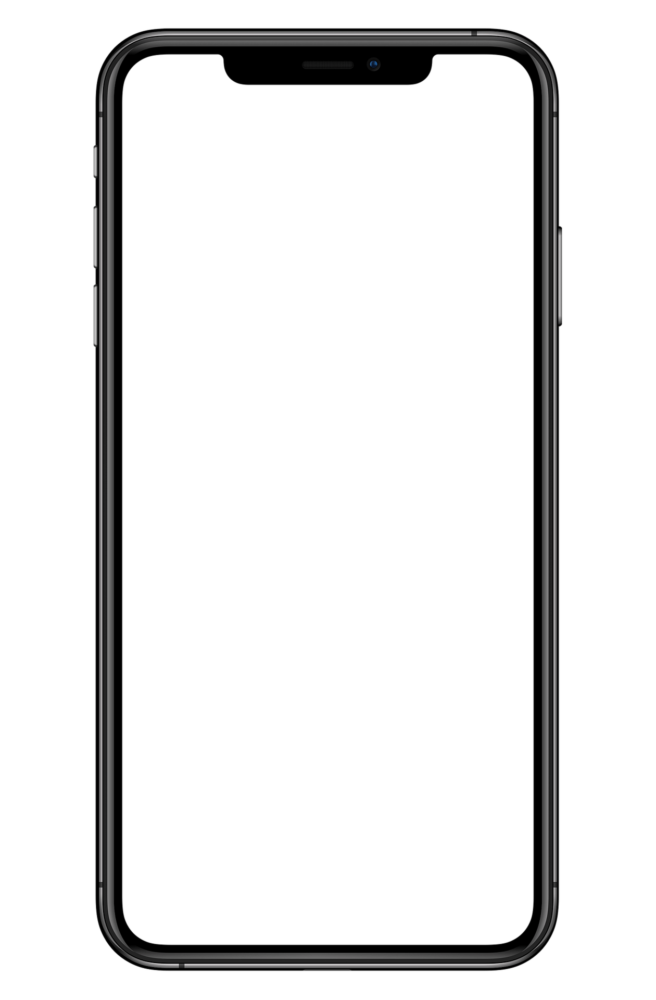 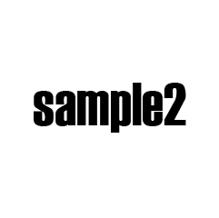 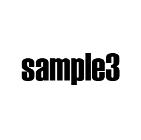
그림과 추억을 사람들과 함께하세요
작가들의 소묘와 각자의 추억을 기묘한에서 공유하고
그림에 대한 다양한 이야기를 나누세요
간편하게 거래 정보를 확인하세요
구매자와 아티스트 모두가 빠르게 거래 정보를 확인하여
안전한 거래, 신뢰성 거래를 제공합니다
채팅으로 활발하게 소통하세요
여러 사람들과 이야기를 나누고 아티스트와 소통하여
안전한 거래를 할 수 있도록 도와줍니다
발전해 가는 그림을 기록하세요
자신의 그림 연대기를 만들어 그림과 부족한 점을 기록해
나가며 그림 실력 향상을 눈으로 쉽게 확인할 수 있습니다
광고영상
서비스 소개 영상
디자인 컨셉
실제같은
깔끔한
정적인
실제 손 그림과의 시너지와 입체적인 느낌을 살리기 위하여 “뉴 모피즘" 스타일 디자인을 선택 했습니다.
서체 로고
기묘한
기록할 기. 그릴 묘. 땀한. 의 뜻을 따서 네이밍을 진행하였으며,
소묘 위주 커미션 서비스인 만큼 손 그림체 느낌이 나는 서체를 사용하였습니다.
메인 로고
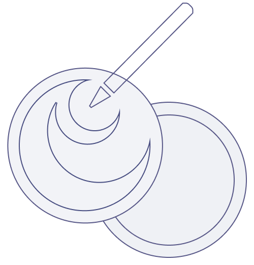
'희미해져 가는 지난 추억을 기억하며 그림으로 남기다' 라는 의미를 담아 제작 하였습니다.
추억과 그림이 그려지는 종이를 두가지의 원에 대비하여 연출 했습니다.
서체
나눔스퀘어
가나다라마바사아자차카타파하
교보 손글씨 2020
가나다라마바사아자차카타파하
UI폰트는 가독성이 좋고 모던한 느낌을 주는 나눔스퀘어를 사용하였으며,
메인 로고 서체로는 손 글씨 느낌의 교보 손글씨 2020을 사용하였습니다.
아이콘
컬러
#4C4C79
#7777A8
#9EA1B7